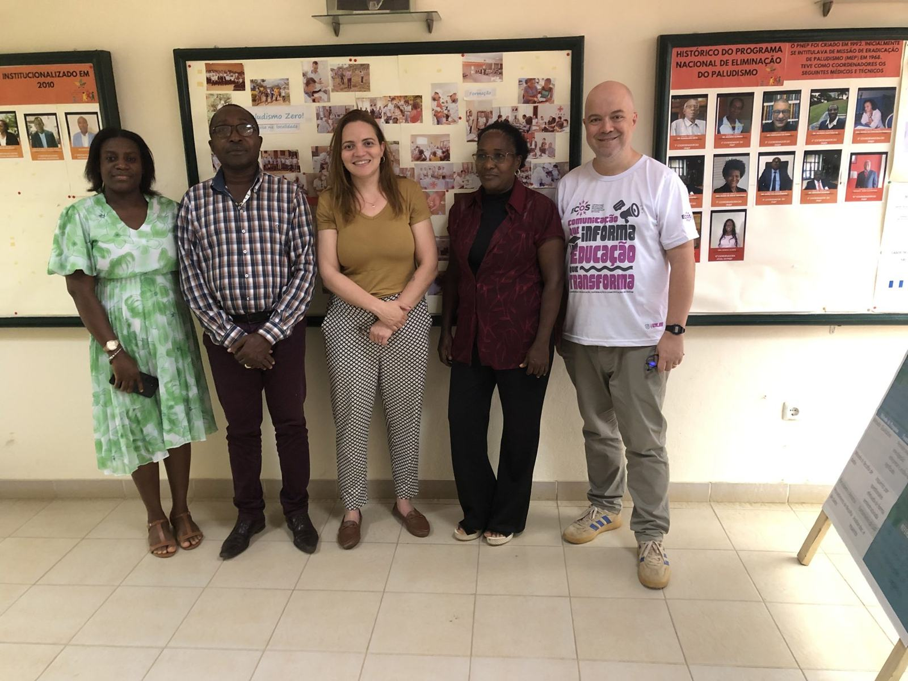

São Tomé e Príncipe
Quem pensa em São Tomé pensa em praias, cacau e roças na montanha coberta de névoa. É tudo verdade. Foi por aí que a equipe passou antes de entrar nos postos de saúde.
Lembranças de viagem
role para ver →Mas quando surge uma dúvida sobre saúde, a quem se pergunta aqui?
Por onde a informação de saúde pode circular
Estes são os caminhos que a equipe procurou entender nas entrevistas com profissionais de saúde. O que cada um pesa em São Tomé vai sair nos artigos. Aqui ficam só os lugares.
entrevistas com profissionais de saúde em dois distritos. Cada ponto é uma entrevista.
“A rádio comunitária ainda é o caminho mais rápido para corrigir uma informação errada.”Técnico(a) de enfermagem · trecho de exemplo
“O áudio chega no grupo da família antes de chegar no posto.”Agente comunitário(a) · trecho de exemplo
Os resultados saem nos artigos
Até lá, esta página mostra só dados descritivos e anônimos: quantas pessoas foram ouvidas, onde e em que profissão. As análises de São Tomé e dos outros 12 países chegam com as publicações do projeto.
Ver os 13 países no globo → Diário do Peru →
Protótipo para a equipe do ambiente virtual. Fotos da pasta do projeto no Drive, com legendas provisórias. Números, distritos e falas são exemplos fictícios, só para mostrar o formato.